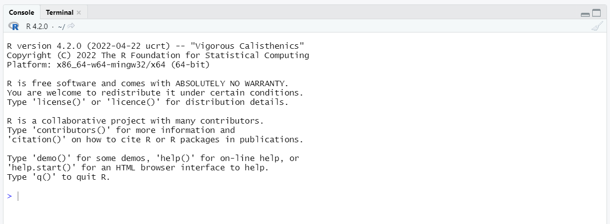
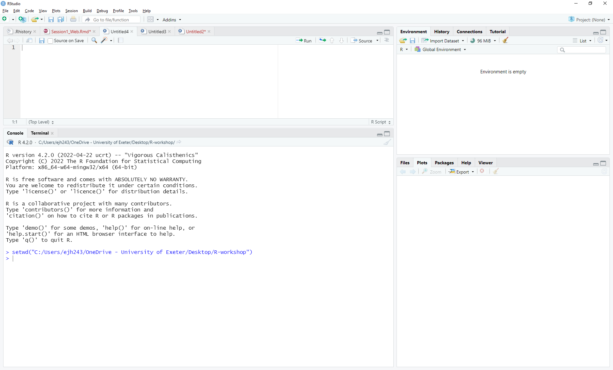

Running Commands With R#
Executing Commands in R#
The console pane (in RStudio, the bottom left panel) is the place where R is waiting for you to tell it what to do, and where it will show the results of a command that has been executed. This console is the fundamental component of R and is available outside of RStudio. It is recognisable due to the blurb of text at the top (which provides details on which R version you are using) and the arrowhead cursor (>).

You can type commands directly into the console and press Enter to execute those commands. For example we can use R as a calculator:
2+2
Interacting with R#
There are two main ways of interacting with R: using the console or by using a script. A script is a text file that contains your code. R scripts are often saved with the file extension .r or .R.
We want our code and workflow to be reproducible. In other words, we want to write code in a way that anyone (including ou future selves) can easily replicate, such they will obtain the same results from our code on their computer. If we type our commands directly into the Console, they will be forgotten when you close the session. It is preferable to type the commands you want to run directly into the script editor, so that you can save the script. This way, you have a complete record of what you did, you can easily show others how you did it and you can do it again later on if needed.
RStudio allows you to execute commands directly from the script editor by using the Ctrl + Enter shortcut. If no text is highlighted, the command on the current line in the script (i.e. where the line containing the cursor) will be sent to the console and executed. Alternatively you can select multiple lines to send to the console for execution when you press Ctrl + Enter.
There may be times when you want to type directly in the console, for example a quick calcuation. RStudio provides the Ctrl + 1 and Ctrl + 2 shortcuts allow you to jump between the script and the console windows.
If R is ready to accept commands, the R console shows a > prompt. If it receives a command (by typing, copy-pasting or sent from the script editor using Ctrl + Enter), R will try to execute it, and when ready, show the results and come back with a new >prompt to indicate it is ready for the next command.
If R is still waiting for you to enter more text to complete the current command the console will show a + prompt. It means that you haven’t finished entering a complete command. This is because it is expecting a specific character, that finishes a command you have already started. For example, if you open a parenthesis or quotation, it needs to be closed before the command can be processed. Another way of thinking about this is R expects for every left-parentheses you include, a right-parentheses to accompany it. Similarly, it expects an even number of quotation marks. This can be quite frustrating, as it might not be obvious what R is waiting for, but if you’re in RStudio and this happens, click inside the console window and press Esc; this will cancel the incomplete command and return you to the > prompt.
Set the Working Directory#
When using R, often we want to analyse data stored in files on our computer and potentially save some output.
It is important to note that we are always working in a folder or directory on our computer. There are times when this may not be important (for example running a simulation from given parameters). But if we want a specific file, we need to tell R where to find it. We do using by specifying the filepath. One common issue, when starting out with programming is understanding where a program (in this case R/Rstudio) is looking for the file(s).
Theoretically, we can find any file from any location given the correct filepath. However, to make our code simpler, it can be helpful to change location, and move to a folder where the files we want to work on are located. The folder we are currently in is called the working directory.
Let’s create a folder on our computer, to store all the files we will work on for this series of workshops. On your computer, open up a file explorer window (outside of Rstudio) and create a folder called R-workshop somewhere memorable. For example on the Desktop.
In Rstudio, we can change the working directory through the drop down menus by selecting options
Session -> Set Working Directory -> Choose Directory...
We then search for and select the folder we want.

You will note that in the R console a line of code has appeared.

This is the R command that is required to change the current working directory using the function setwd(). The text string inside the “()” is the filepath to the folder we want to change to. If you save this to your script, next time you won’t need to click through the menus, you can execute this line of code instead.
You should also see that in the File Pane (bottom-right), this has also changed to this new directory. We need to know where we are such that we can navigate R to find files and locations appropriately. If we ever get lost we can use getwd() to get the path of our current location.
getwd()
Absolute vs Relative Filepaths#
We can specify filepaths in two ways:
Absolute - this is where we direct R how to get there from the root folder, which is the uppermost folder in the system and is denoted “/”. Any file path that starts with “/” is an absolute filepath.
Relative - this is where we direct R how to get to the new folder from where we currently are. For example to get to a sub-folder of the current folder we can just provide the name of the current folder. We can use shortcuts to go up a folder (“..”). Relative file paths do not start with “/”
Defining Variables#
A key concept in any programming language is that of a variable. A variable is just a name, such as x, current_temperature, or subject_id which represents some value. We use the word value here loosely as it could be a singular number, a matrix, or a more complex numerical structure. It also does not have to even be a number it could be a string of text. The idea though is it’s value might change and we want to simplify how we process the value.
In R, we can create a new variable simply by assigning a value to it using <-
weight_kg <- 55
weight_kg
Once a variable has a value, we can print it by typing the name of the variable and hitting Enter (or return).
In general, R will print to the console any object returned by a function or operation unless we assign it to a variable.
We can do arithmetic with the variable:
2.2 * weight_kg
We can also change an object’s value by assigning it a new value, and see that accessing the variable again shows the new value.
weight_kg <- 57.5
weight_kg
If we imagine the variable as a sticky note with a name written on it, assignment is like putting the sticky note on a particular value:

This means that assigning a value to one object does not change the values of other variables. For example, let’s store the subject’s weight in pounds in a variable:
weight_lb <- 2.2 * weight_kg
# weight in kg...
weight_kg
# ... and in pounds
weight_lb

and then change weight_kg:
weight_kg <- 100.0
# weight in kg now...
weight_kg
# ...and weight in pounds still
weight_lb

Since weight_lb doesn’t “remember” where its value came from, it isn’t automatically updated when weight_kg changes.
This is different from the way spreadsheets work.
Assignment Operator#
<- is the assignment operator. It assigns values on the right to objects on the left. So, after executing x <- 3, the value of x is 3. The arrow can be read as 3 goes into x. For historical reasons, you can also use = for assignments, but not in every context. Because of the slight
differences in syntax, it is good practice to use always <- for assignments, except when specifying the values of arguments in functions, when only = should be used, see below.
In RStudio, typing Alt + - (push Alt at thesame time as the - key) will write <- in a single keystroke.
Activity: Assigning Values to Variables#
Draw diagrams showing what variables refer to what values after each statement in the following program:
mass <- 47.5
age <- 122
mass <- mass * 2.0
age <- age - 20
Printing With Parentheses#
An alternative way to print the value of a variable is to use () around the assignment statement.
As an example: (total_weight <- weight_kg + weight_lb) adds the values of weight_kg and weight_lb, assigns the result to the total_weight, and finally prints the assigned value of the variable total_weight.
Naming Objects in R#
You can use any combination of alphanumeric characters, along with dots and underscores, to name an R object. But there are a few exceptions:
Names cannot start with a number;
Names cannot have spaces;
Names cannot be a standalone number such as
12or0.34;Names cannot be a reserved word such as
if,else,function,TRUE,FALSEandNULLjust to name a few (to see the full list of reserved words, type?Reserved).
Examples of valid names include a, dat2, cpi_index, .tmp, and even a standalone dot . (though a dot can make reading code difficult under certain circumstances).
Examples of invalid names include 1dat, dat 2 (note the space between dat and 2), df-ver2 (the dash is treated as a mathematical operator), and Inf (the latter is a reserved word listed in the ?Reserved help document).
You can mix cases, but use upper cases with caution since some letters look very much the same in both lower and upper cases (e.g. s and S).
Functions#
Functions are a core concept in programming, they are commands which tells R to perform a particular task. The utility of a function is that it will perform its given action again and again. R identifies functions by the presence of “()” following their name. You can customise how the function behaves by the use of arguments, this is additional information provide to the function to allow it to run).
We have already used two functions in this workshop. First we used setwd(). We used this function with an argument, which was the path to the folder we wanted to change to. We can reuse this function to change to an unlimited number of different folders on our computer. Then we used getwd(), this is an example of a function that doesn’t require any arguments.